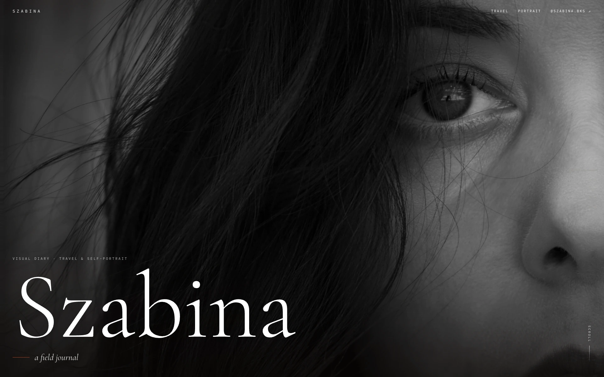
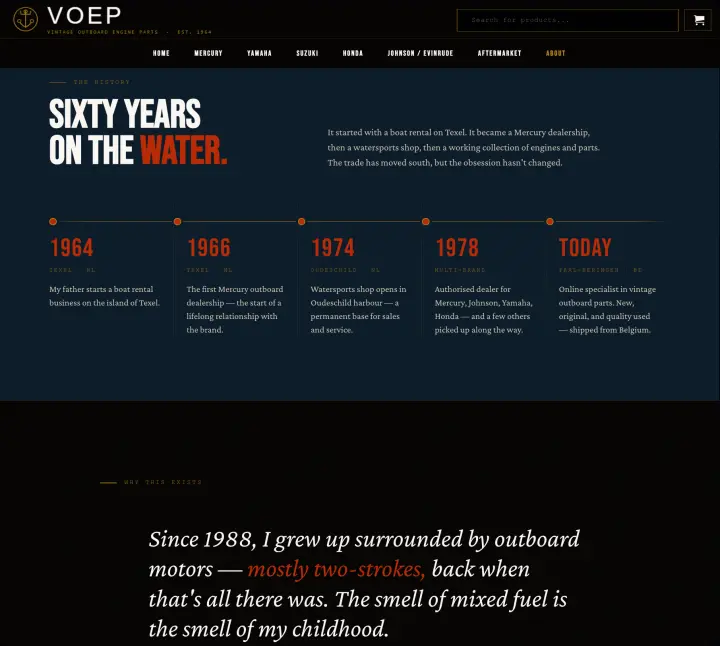

01 — 02
Szabina
Cinematisch reisjournaal · Zelf te bewerken
“Hij kon alles bouwen wat ik vroeg, helemaal op mij afgestemd. Snel, ontspannen, professioneel.”
Szabina — Reisjournaal
Eerst een harde waarheid
Op dit moment laat je merk je kleiner lijken dan je bent.
Onmogelijk te negeren. Met opzet.
Het doel is niet gewoon een mooiere site. Het is er één die van “mooi werk” een geboekt gesprek maakt.
Twee echte projecten · blijf scrollen

Cinematisch reisjournaal · Zelf te bewerken
“Hij kon alles bouwen wat ik vroeg, helemaal op mij afgestemd. Snel, ontspannen, professioneel.”
Szabina — Reisjournaal

Vintage watersport-webshop · Eerste verkoop naar Zweden
“Nu ziet het er net zo professioneel uit als ik het altijd voor me zag — dankzij Adrians ideeën en hulp.”
Alex — Eigenaar
Dat is het werk. Nu de pitch.
Nieuwe studio, geobsedeerd door het vak. Als het je iets liet voelen, dan is dat de hele pitch.
Start een projectEen echt gesprek over je bedrijf, je klanten en wat het merk tegenhoudt.
Eén heldere richting — meestal binnen een week — en dan een site die daaromheen wordt gebouwd, persoonlijk, geen template met jouw logo erin geplakt.
Elk verzoek nagelopen en verfijnd. Jij krijgt geen zorgen en een site die je met trots doorstuurt.
Duidelijke scope, een vaste planning. Als de eerste ontwerprichting niet landt, werk ik hem één keer opnieuw uit — gratis. En als je dan nog niet verder wilt, betaal je alleen voor de gewerkte uren, met een maximum van 30%. Het risico is voor mij, niet voor jou.
“Ik ben Adrian. Ik ben Noxta in Tilburg begonnen omdat de meeste websites goede bedrijven gemiddeld laten lijken. Dat los ik op.” Adrian — Oprichter, Noxta
Projecten in 50% vooraf, 50% bij livegang — Tier III in drie termijnen. Geen verrassingen.
Een klein chatvenster voor de vragen die je nu tien keer per week via e-mail krijgt. Antwoorden uit een FAQ die ik samen met je schrijf; boekt direct in je agenda. Add-on bij Standard & Active retainers.
Ergens €500–1.000 voor een website gehoord? Dat was een templateprijs — dit is iets anders. Niet zeker welke aanpak? Start een project en ik zeg je eerlijk welke past.
Terecht. Daarom leunt niets wat ik bouw op mijn aanwezigheid. Het is schone, handgecodeerde, standaard HTML/CSS — elke developer kan het overnemen. Je domein, bestanden en accounts staan vanaf dag één op jouw naam. In het slechtste geval heb je nog steeds een site die werkt.
Van jou. Om te houden — geen licentie, geen lock-in, geen maandbedrag alleen om online te blijven. Als het klaar is, geef ik je alles. Je kunt weglopen wanneer je wilt; de meesten doen dat niet, maar het kan.
Twee manieren. Mail me en ik offreer de wijziging — of houd me op een retainer (vanaf €75/mnd) waar aanpassingen er gewoon bij horen: binnen dezelfde week, zonder telkens opnieuw uit te leggen wie je bent. Je beslist na de livegang, niet ervoor.
Als een template alles zegt wat je nodig hebt — gebruik er dan één. Je leest dit omdat dat niet zo is. Die tools geven iedereen dezelfde vormen; ik bouw die van jou vanaf nul, zodat het eruitziet als jij en snel laadt. Ander werk, ander resultaat.